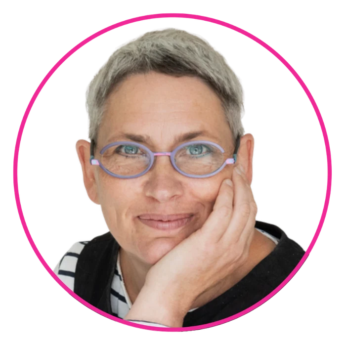
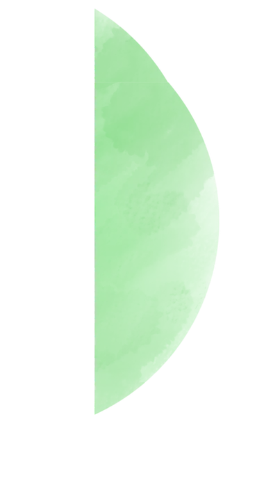
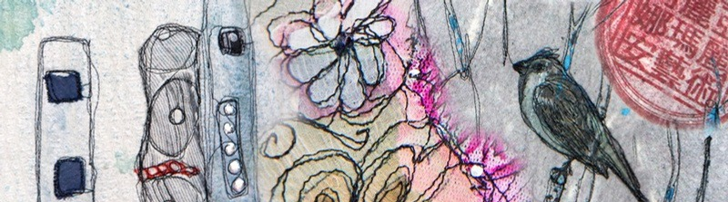
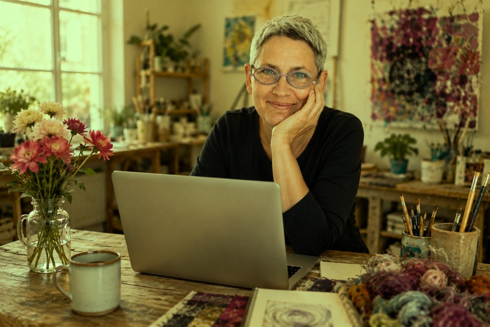
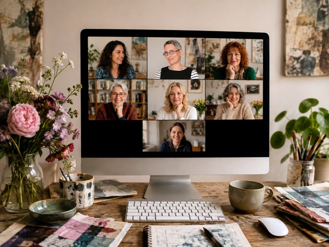
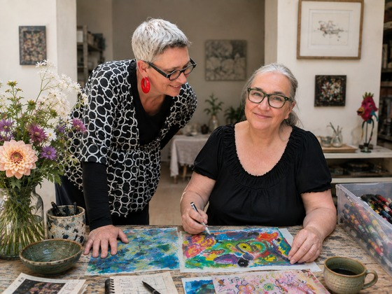
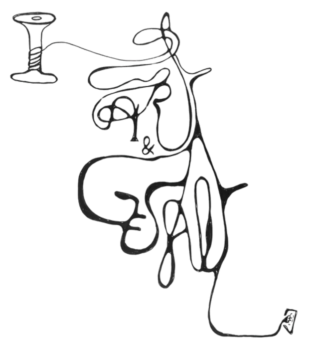
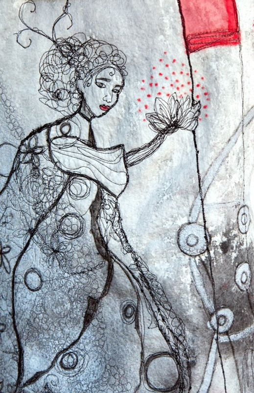

Transformation personnelle & artistique

About meSéances individuelles · Ateliers · Retraites
Artiste & praticienne en Gestalt-thérapie
En donnant forme à ce qui est ressenti mais pas encore conscient, nous découvrons qui nous sommes et qui nous allons devenir.
En combinant l'art intuitif et la Gestalt-thérapie, je crée des espaces de créativité, d'exploration de soi et de transformation.
À travers des retraites créatives sur mesure, des ateliers immersifs, des expériences de groupe et des séances individuelles en ligne, je souhaite faciliter votre rencontre avec vous-même et vous accompagner pour devenir créateur·trice de votre vie.
Dans des espaces confidentiels et bienveillants, je vous propose d'explorer la conscience de soi (awareness) et de vous reconnecter à votre créativité à travers des expériences expérientielles.
Mon accompagnement s'adresse particulièrement aux femmes qui traversent une transition de vie et à celles qui souhaitent retrouver le lien avec leur créativité singulière.
Réveillez la créatrice qui sommeille en vous !


Selon vos besoins, choisissez un accompagnement individuel ou rejoignez une expérience créative en ligne.
Pour une expérience immersive, réservez une retraite à ARTventureLand. Mon atelier, situé au cœur de la magnifique vallée du Loir, est une oasis inspirante et ressourçante, le lieu idéal pour prendre le temps de se reconnecter à soi, à sa créativité et à son expression artistique.

Des séances individuelles Art & Gestalt en ligne, pour un accompagnement personnalisé et à votre rythme.
En savoir plus
Des séances mensuelles de groupe en ligne pour votre développement personnel et/ou artistique.
En savoir plus
Retraites créatives sur mesure, ateliers immersifs et expériences de groupe dans un cadre inspirant et bienveillant.
En savoir plusPour créer votre accompagnement sur mesure, je vous propose un premier rendez-vous téléphonique gratuit et sans engagement de 20 minutes. Ce premier échange nous permet de faire connaissance, de parler de vos besoins et de sentir ensemble si nous souhaitons travailler l'un·e avec l'autre.
Envoyez-moi un e-mail pour convenir d'un rendez-vous via WhatsApp ou Zoom.
Réserver l'appel découverteL'art intuitif et expérimental est une ressource puissante pour donner forme à ce qui se vit intérieurement, parfois avant même que nous en ayons conscience. Expérimentez avec des matériaux, ses couleurs et des processus créatifs pour laisser émerger votre expression artistique, explorer votre créativité et donner forme à votre monde intérieur.
La Gestalt-thérapie vous invite à ralentir et à porter votre attention sur ce qui se passe ici et maintenant. À travers la présence et le dialogue, vous pouvez mieux percevoir ce qui se joue en vous, clarifier vos émotions, vos besoins et vos choix, et ouvrir de nouvelles possibilités.
Lorsque l'art et la Gestalt se rencontrent, la création devient un espace d'exploration de soi. À travers l'expérience artistique, le dialogue et la présence, nous pouvons donner forme à ce qui se vit intérieurement, laisser émerger de nouvelles prises de conscience et ouvrir de nouvelles possibilités.


Certifiée en tant que praticienne par l'Institut Français de Gestalt (IFFP), ma pratique s'inscrit dans les principes de la Gestalt-thérapie, avec un profond respect de chaque personne et de son unicité. Je m'engage à créer des espaces sûrs, bienveillants, confidentiels et respectueux, dans lesquels l'exploration, la créativité et le développement personnel peuvent se déployer librement. Ma pratique se situe dans les limites de mes compétences et de mon champ professionnel. Je respecte les principes éthiques de la profession et bénéficie d'une supervision régulière afin de garantir un accompagnement responsable et de qualité.
en savoir plus